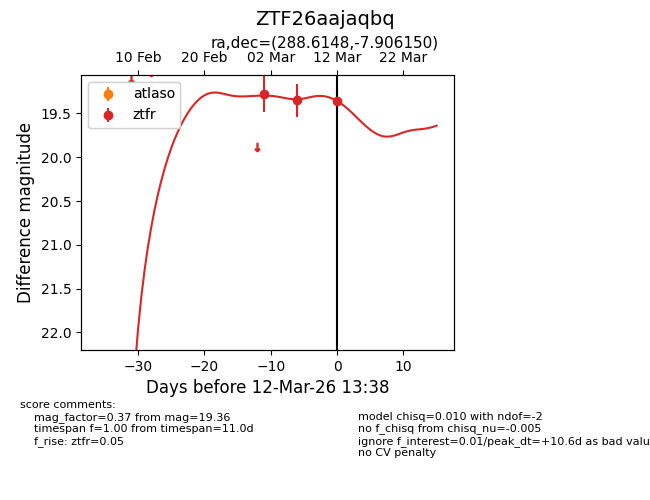
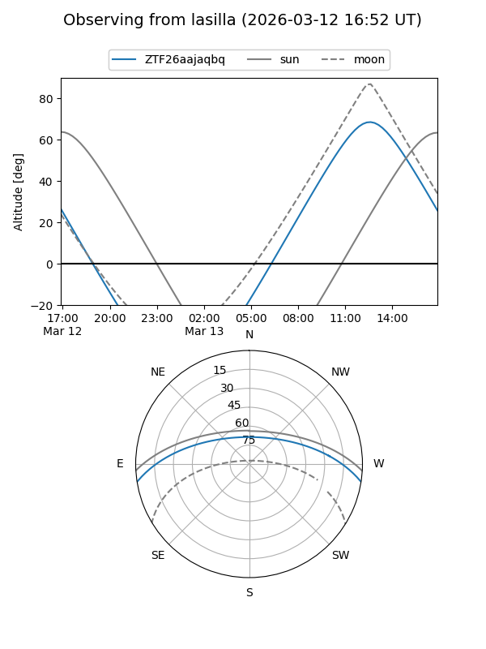
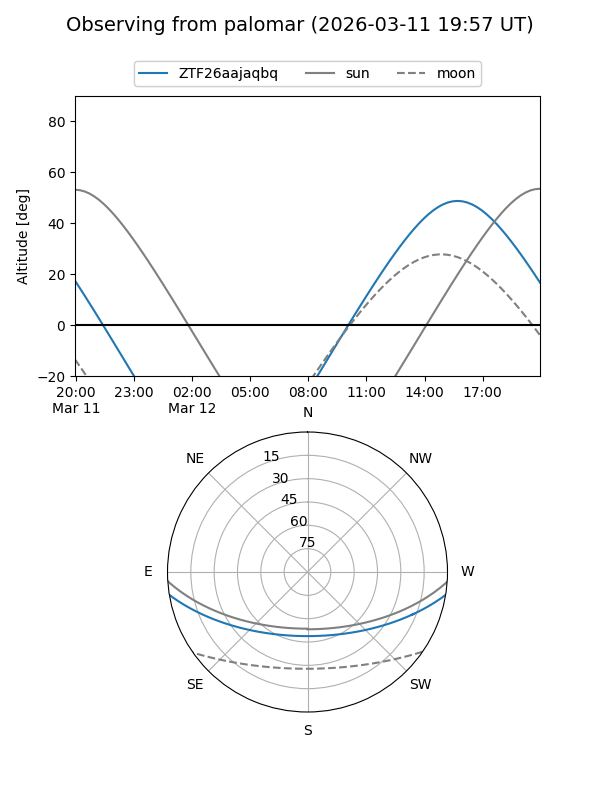
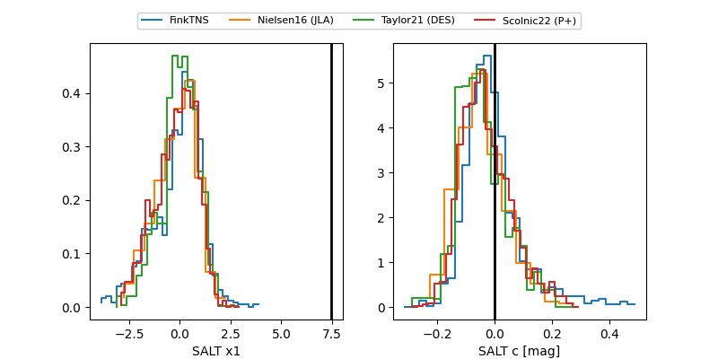

ZTF26aajaqbq
Target ZTF26aajaqbq at 2026-03-12 13:40
Aliases and brokers:
FINK: link
Lasair: link
ALeRCE: link
alt names
ZTF26aajaqbq (ztf,fink_ztf)
Coordinates:
equatorial (ra, dec) = 288.6148,-7.90615
equatorial (HMS+DMS) = 19:14:27.55,-07:54:22.14
galactic (l, b) = (28.4570,-8.69190)
Flags:
Photometry:
last ztfr=19.36
3 ztfr detections
Lightcurve

Visibility


Additional plots
